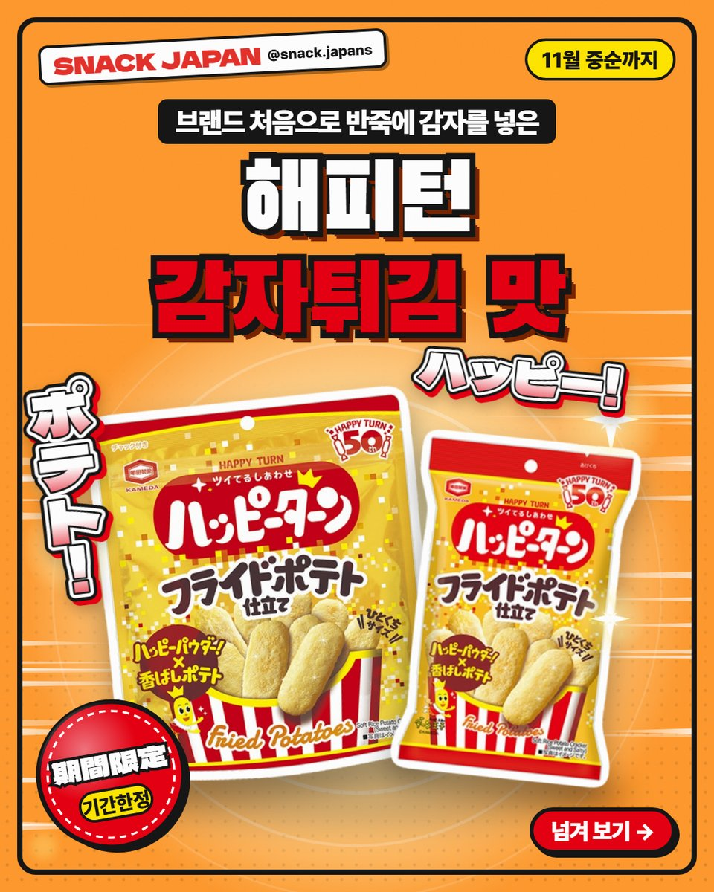
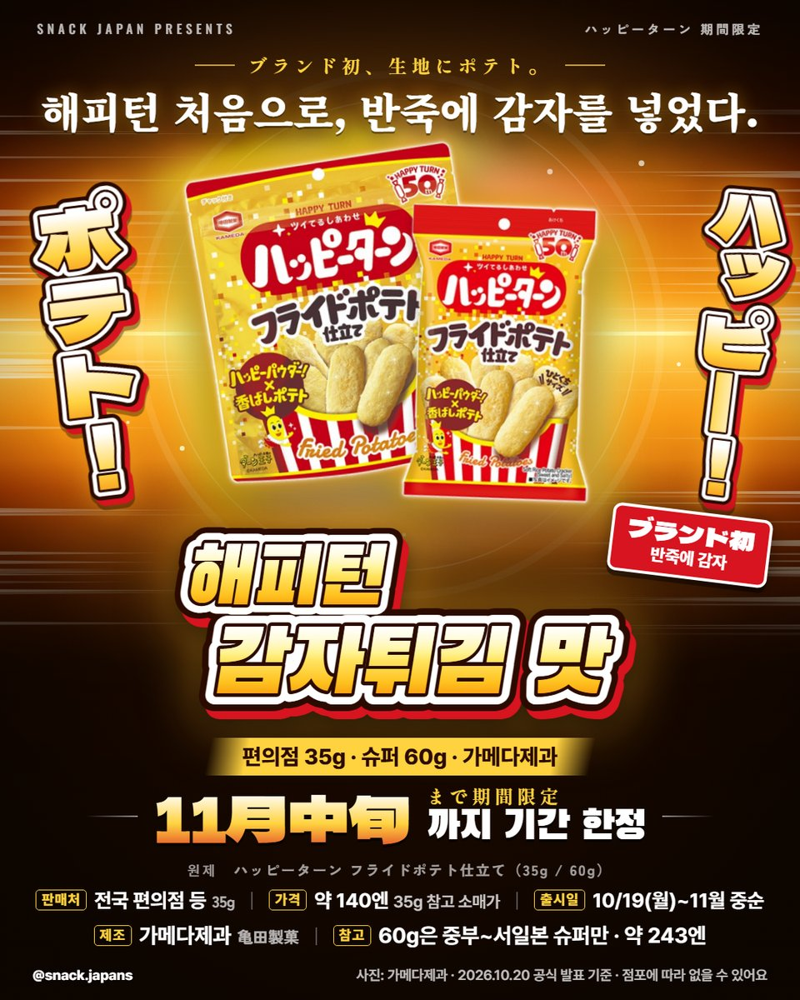
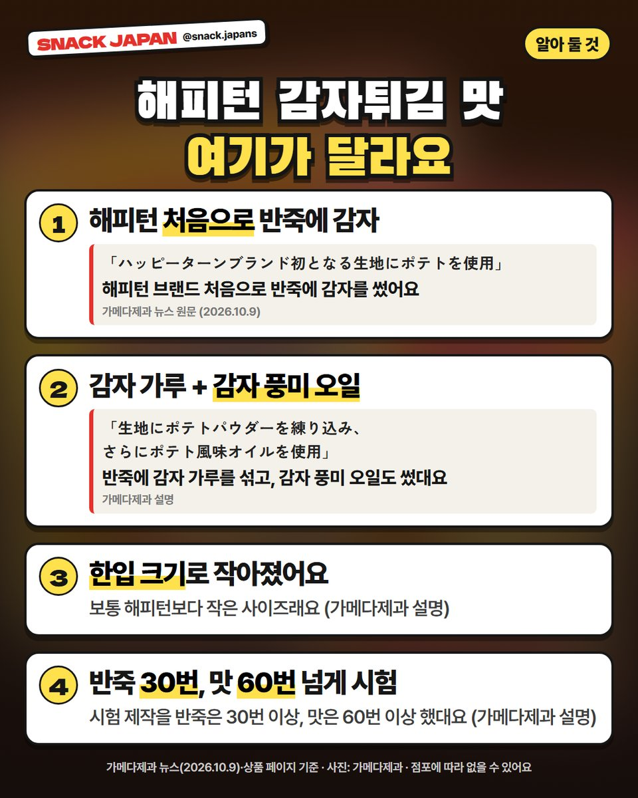
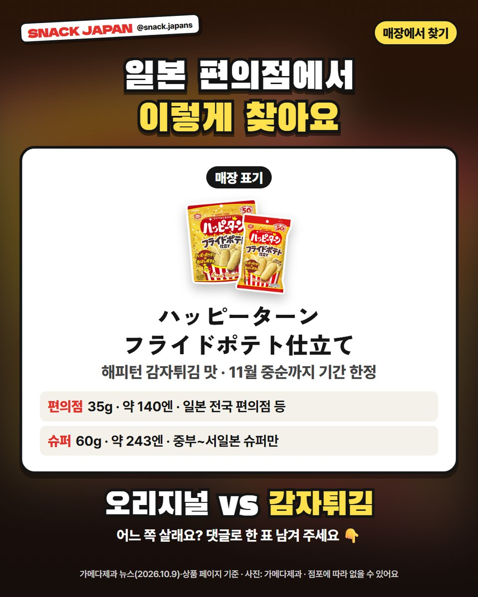

일본 해피턴 감자튀김 맛 출시, 해피턴 처음으로 반죽에 감자를 넣었대요
가메다제과 해피턴이 감자튀김 맛으로! 10/19부터 11월 중순까지만 파는 기간 한정이에요.
일본 과자 해피턴이
감자튀김 맛으로 나왔어요 🍟
그것도 해피턴 처음으로 반죽에 감자를 넣었대요!
11월 중순까지만 파는 기간 한정이라,
가메다제과 발표 기준으로 얼른 정리해 볼게요.

1. 10/19부터 11월 중순까지만!
- 만드는 곳: 가메다제과
- 판매: 10월 19일(월)부터 11월 중순까지 (기간 한정)
- 편의점: 35g 봉지, 일본 전국 편의점 등 (편의점 먼저 판매)
- 슈퍼: 60g 큰 봉지, 중부~서일본 슈퍼에서만
- 가격: 사진 카드에 정리해 뒀어요

2. 해피턴 처음으로 반죽에 감자!
가메다제과 뉴스에
'해피턴 브랜드 처음으로 반죽에 감자를 썼다'고 나와 있어요.
- 반죽에 감자 가루를 섞었대요
- 감자 풍미 오일도 썼대요 (가메다제과 설명)

3. 한입 크기로 작아졌어요
보통 해피턴보다 작은 사이즈래요.
시험 제작을 반죽은 30번 이상, 맛은 60번 이상 했대요 (가메다제과 설명).

4. 매장에서 이렇게 찾아요
- 일본 이름: ハッピーターン フライドポテト仕立て
- 참고: 점포에 따라 없을 수 있어요
총평
- 기준: 10월 20일 가메다제과 공식 발표
- 추천: 해피턴 좋아하는 분, 감자 과자 좋아하는 분, 일본 편의점 신상 구경하는 분
오리지널 해피턴 vs 감자튀김 맛,
일본 가면 어느 쪽 살래요? 🙋